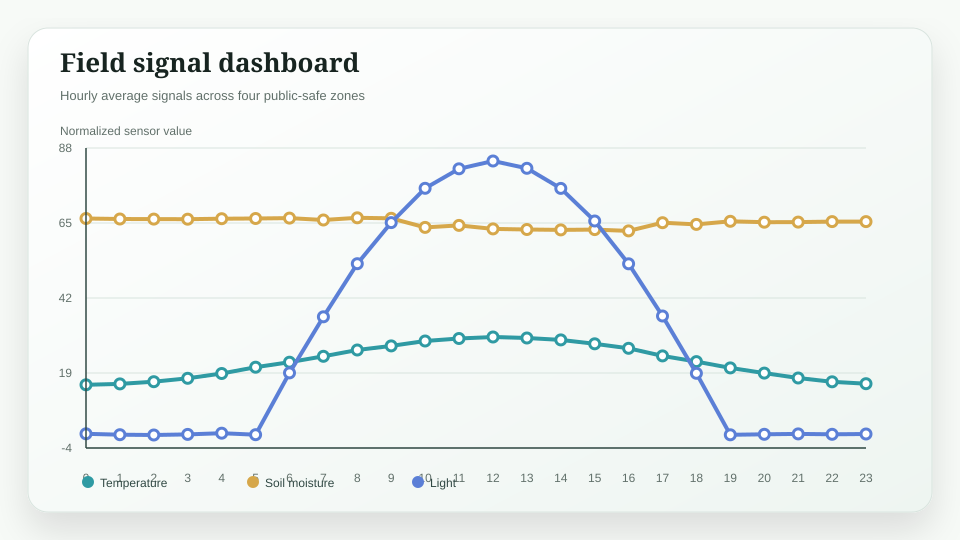
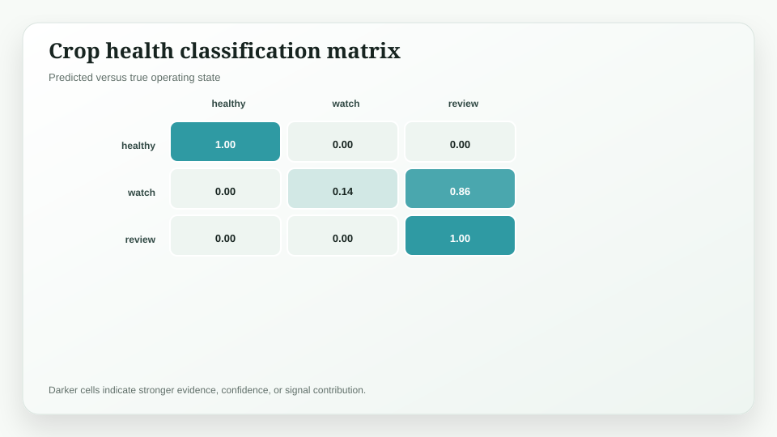
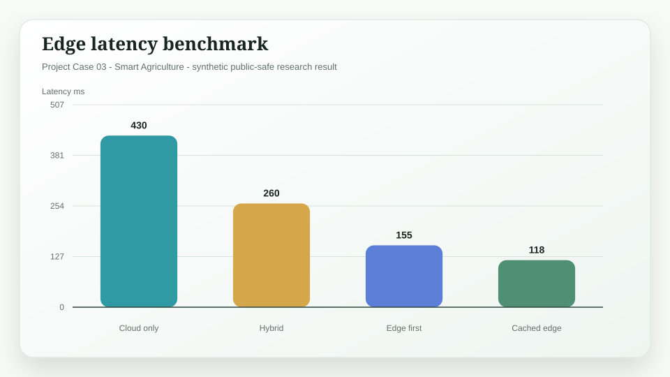

Project Case 03 / Smart Agriculture
Xiangxin AIoT Agriculture Platform
A smart agriculture AIoT platform prototype that combines edge sensing, computer vision, and human-reviewable recommendations.
Research Results
| Metric | Result | Interpretation |
|---|---|---|
| Crop alert precision | 0.89 | Synthetic validation on balanced public-safe condition classes |
| Edge latency reduction | -64% | On-device inference benchmark versus cloud-only path |
| Action trace coverage | 96% | Alerts mapped to recommended review or work-order state |
Figures


